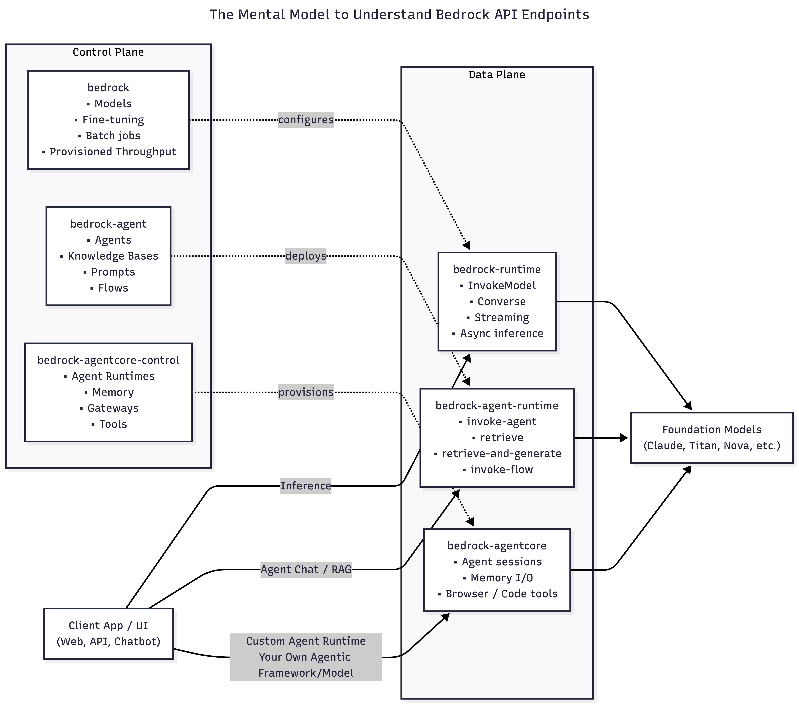

I recently completed a GenAI specialization from AWS:
I got to learn quite a few things in that. I have collated below my notes from the course.

Disclaimer:
* The AWS CLI commands are representational. Kindly checkaws <bedrock-api> <command> helpto confirm the workings.
* These are notes for learning and I have used LLMs to tweak my messaging or make it crisper/better
* Sources are attributed to all pics for clarity
How to read this blog Amazon Bedrock exposes multiple APIs, but they all fall into two buckets:
- Control Plane → provide the administrative APIs/ define what exists (define/create models, agents, flows)
- Data Plane → provide the primary function of the service (invoking the model/agent/flow)
AWS explains what is Control Plane and Data Plane here
This blog walks top-down:
- How to invoke models (Bedrock & Bedrock runtime)
- Agent abstractions (Agents & Flows)
- Custom runtimes (AgentCore)
- Safety enforcement (Guardrails)
I. Introduction to AWS Bedrock
Amazon Bedrock is a fully managed, serverless AWS service that exposes foundation models, agent frameworks, and safety controls through a unified API surface.
Types of AI Apps one can build:
- GenAI Deteministic or Agentic WorkFlows
- Conversational AI Applications
What Bedrock offers = Infrastructure (serverless) + Models (Foundation Models)
What Bedrock service allows you to do?
- Choose a model
- Provide Inference Parameters
- temparature
- top_p
- other model_specific settings
- Model specific inputs (including Prompt)
- Output config
- Guardrails for both query and output
Other things you can do:
- Run batch jobs
- Async request calls
- fine-tuning
- provisioned throughput
II. Control Plane and Data Plane Endpoints of AWS Bedrock
AWS consistently separates services into:
- Control Plane → configure, create, manage things
- Data Plane → run the workload, handle high-volume traffic
| S No | Endpoint | Plane | Purpose | Who uses this? |
|---|---|---|---|---|
| 1 | bedrock |
Control plane | Model management, setup, configuration | Platform / ML / Infra teams defining models, capacity, and governance |
| 2 | bedrock-runtime |
Data plane | High-throughput inference calls | Application developers building stateless LLM-powered features |
| 3 | bedrock-agent |
Control plane | Manage agents, KBs, prompt templates & flows | Platform / ML teams designing managed agent & RAG architectures |
| 4 | bedrock-agent-runtime |
Data plane | Invoke agents, query KBs, invoke flows | App developers consuming managed agents, RAG, and flows at runtime |
| 5 | bedrock-agentcore-control |
Control plane | Manage AgentCore resources (Runtime, Memory, Identity, Gateway, Tools) | Advanced platform / agent teams provisioning custom agent runtimes |
| 6 | bedrock-agentcore |
Data plane | Run agent sessions, tools (Browser/Code-Interpreter), Memory I/O | Teams running custom agent runtimes (LangGraph / custom planners / tools) |
1) bedrock — Control plane (model management, setup, configuration)
This is the control plane for core model management. It includes APIs used to manage models, start fine-tuning model jobs, and batch inferencing, among others
1.1 Discover models & metadata:
# List available foundation models
aws bedrock list-foundation-models --region us-east-1
# path=bedrock (control); no model arg needed.
# Inspect a specific model (schema, modalities, streaming support, etc.)
aws bedrock get-foundation-model \
--model-identifier anthropic.claude-3-5-sonnet-20240620-v1:0 \
--region us-east-1
# path=bedrock; model-identifier=<provider>.<model>:<version>[!NOTE] If you are using boto3 sdk in python, you would use something like below
client = boto3.client("bedrock", region_name="us-east-1")
# Call the API
response = client.list_foundation_models()
# Print full response
print(response)In this blog, we are sticking with
aws clicommands for easier understanding of the core API endpoints
1.2 Configure account/Region‑level invocation logging
# Enable model invocation logging to S3 (and/or CloudWatch)
aws bedrock put-model-invocation-logging-configuration \
--logging-config '{
"s3Config": { "bucketName": "my-bedrock-logs", "keyPrefix": "invocations/" },
"textDataDeliveryEnabled": true,
"imageDataDeliveryEnabled": true,
"embeddingDataDeliveryEnabled": true
}' \
--region us-east-1
# path=bedrock; applies account/Region-wide (no model-id).
# Verify logging state
aws bedrock get-model-invocation-logging-configuration --region us-east-1
# path=bedrock; returns loggingConfig. 1.3 Provisioned Throughput (dedicated capacity)
# Create Provisioned Throughput for a model (1 MU, 1 month)
aws bedrock create-provisioned-model-throughput \
--model-id anthropic.claude-3-5-sonnet-20240620-v1:0 \
--provisioned-model-name my-pt-sonnet \
--model-units 1 \
--commitment-duration OneMonth \
--region us-east-1
# path=bedrock; model-id can be model ID or ARN.
# Check status/details
aws bedrock get-provisioned-model-throughput \
--provisioned-model-id arn:aws:bedrock:us-east-1:<ACCOUNT_ID>:provisioned-model/<PT_ID> \
--region us-east-1
# path=bedrock; provisioned-model-id is name or ARN. [51.4 Custom model (fine‑tuning) jobs
# Submit a fine-tuning (model-customization) job
aws bedrock create-model-customization-job \
--job-name ft-haiku-faq \
--custom-model-name haiku-faq-v1 \
--base-model-identifier anthropic.claude-3-haiku-20240307-v1:0 \
--role-arn arn:aws:iam::<ACCOUNT_ID>:role/BedrockCustomizationRole \
--training-data-config '{"s3Uri":"s3://my-train-bucket/data/"}' \
--output-data-config '{"s3Uri":"s3://my-train-bucket/output/"}' \
--region us-east-1
# path=bedrock; base-model-identifier selects FM; S3 URIs carry data & outputs.
# Track job
aws bedrock get-model-customization-job --job-identifier ft-haiku-faq --region us-east-1
# path=bedrock; job-identifier is job name or ARN.1.5 Batch inference (multi‑prompt jobs, async to S3)
# Create a batch inference job from JSONL inputs in S3
aws bedrock create-model-invocation-job \
--job-name faq-batch-jan \
--role-arn arn:aws:iam::<ACCOUNT_ID>:role/BedrockBatchRole \
--model-id anthropic.claude-3-5-sonnet-20240620-v1:0 \
--input-data-config '{"s3InputDataConfig":{"s3InputFormat":"JSONL","s3Uri":"s3://my-batch/input/"}}' \
--output-data-config '{"s3OutputDataConfig":{"s3Uri":"s3://my-batch/output/"}}' \
--region us-east-1
# path=bedrock; model-id is FM or inference profile; input/output are S3 locations.
# List & get job status/results
aws bedrock list-model-invocation-jobs --region us-east-1
aws bedrock get-model-invocation-job --job-identifier faq-batch-jan --region us-east-1
# path=bedrock; use for status filtering & details.2) bedrock-runtime — Data plane (inference, async calls, high‑throughput)
This is the data plane used for real-time inference. If calling a model to generate output (e.g., text, images), the requests go through this endpoint.
2.1 Single‑prompt InvokeModel (typical text generation)
# Prepare provider-specific body (example: Anthropic Claude 3.x)
cat > request.json <<'JSON'
{
"anthropic_version":"bedrock-2023-05-31",
"max_tokens":512,
"messages":[{"role":"user","content":[{"type":"text","text":"Summarize PolicyPal architecture in 5 bullets."}]}]
}
JSON
# Invoke model and save response
aws bedrock-runtime invoke-model \
--model-id anthropic.claude-3-5-sonnet-20240620-v1:0 \
--content-type application/json \
--accept application/json \
--body fileb://request.json \
--region us-east-1 > response.json
# path=bedrock-runtime; model-id selects FM; body schema must match model provider.[!NOTE] * Note on streaming: The AWS CLI does not support streaming responses for
invoke-model-with-response-stream; use an SDK (e.g., boto3) for streaming
2.2 Converse API (uniform chat interface; supports Prompt Management)
# Simple multi-turn chat using Converse
aws bedrock-runtime converse \
--model-id anthropic.claude-3-haiku-20240307-v1:0 \
--messages '[{"role":"user","content":[{"text":"Give me 3 risks of exposing S3 publicly."}]}]' \
--region us-east-1
# path=bedrock-runtime; model-id may also be a Prompt ARN from Prompt Management.
# Use a managed Prompt (Prompt Management) as the "model" with variables
aws bedrock-runtime converse \
--model-id arn:aws:bedrock:us-east-1:<ACCOUNT_ID>:prompt/<PROMPT_ID>:<VERSION> \
--prompt-variables '{"input":"Generate a release note for v2.1"}' \
--region us-east-1
# path=bedrock-runtime; model-id is Prompt ARN; pass variables via --prompt-variables. 2.3 Embeddings API
# Text embeddings (Titan v2 example)
# same `invoke-model` but since embedding model is used,
# it generates embeddings
aws bedrock-runtime invoke-model \
--model-id amazon.titan-embed-text-v2:0 \
--content-type application/json \
--body '{"inputText":"Bedrock embeddings quick check"}' \
--region us-east-1
# path=bedrock-runtime; model-id is embedding model; body uses inputText.2.4 Async inference (data-plane) to S3 > Use start-async-invoke for long‑running media workloads (e.g., Nova Reel video). Poll status or list jobs:
# Start async invoke (output to S3)
aws bedrock-runtime start-async-invoke \
--model-id amazon.nova-reel-v1:0 \
--model-input file://reel_request.json \
--output-data-config 's3OutputDataConfig={"s3Uri":"s3://my-async/outputs/"}' \
--region us-east-1
# path=bedrock-runtime; model-id must support async; output written to S3. [14]
# Check status of a specific async invocation
aws bedrock-runtime get-async-invoke --async-invoke-id <ASYNC_ID> --region us-east-1
# List recent async invocations
aws bedrock-runtime list-async-invokes --region us-east-1
# path=bedrock-runtime; manage async lifecycle. 3) bedrock-agent — Control plane (Agents, Knowledge Bases, Prompt templates)
This is a control plane endpoint specifically for managing agents, prompt templates, knowledge bases, and prompt flows.
3.1 Create & manage an Agent
# Create an agent with instructions and a foundation model
aws bedrock-agent create-agent \
--agent-name "ops-assistant" \
--instruction "You are an internal Ops assistant. Be concise." \
--foundation-model anthropic.claude-3-5-sonnet-20240620-v1:0 \
--agent-resource-role-arn arn:aws:iam::<ACCOUNT_ID>:role/BedrockAgentRole \
--region us-east-1
# path=bedrock-agent; foundation-model is FM name/ARN used by the agent.
# Create an alias (e.g., prod)
aws bedrock-agent create-agent-alias \
--agent-id <AGENT_ID> \
--agent-alias-name prod \
--region us-east-1
# path=bedrock-agent; alias helps route runtime traffic. 3.2 Create a Knowledge Base and ingest data
# Create knowledge base (storage + vector config defined via JSON files)
aws bedrock-agent create-knowledge-base \
--name kb-docs \
--role-arn arn:aws:iam::<ACCOUNT_ID>:role/BedrockKBRole \
--knowledge-base-configuration file://kb-config.json \
--storage-configuration file://kb-storage.json \
--region us-east-1
# path=bedrock-agent; separate config for embeddings/vector store.
# Add a data source and start ingestion
aws bedrock-agent create-data-source \
--knowledge-base-id <KB_ID> \
--name s3-docs \
--data-source-configuration file://kb-datasource.json \
--region us-east-1
aws bedrock-agent start-ingestion-job \
--knowledge-base-id <KB_ID> \
--data-source-id <DS_ID> \
--region us-east-1
# path=bedrock-agent; connects S3/Git/etc. to the KB and ingests. 3.3 Prompt Management (prompt templates & versions)
# Create a prompt with a variant (includes model + template + inference config)
aws bedrock-agent create-prompt \
--name "cs-faq" \
--default-variant "v1" \
--variants file://prompt-variant.json \
--region us-east-1
# path=bedrock-agent; prompt variants include modelId and templateType.
# Update a prompt (change default variant or template text)
aws bedrock-agent update-prompt \
--prompt-identifier <PROMPT_ID> \
--name "cs-faq" \
--default-variant "v2" \
--variants file://prompt-variant-v2.json \
--region us-east-1
# path=bedrock-agent; prompt-identifier is the prompt ID/ARN. 3.4 Bedrock Flows — create/version/alias with bedrock-agent (Control Plane)
Bedrock Flows are managed via the
bedrock-agentcontrol plane. Typical steps are: create a flow → validate/prepare → version it → create an alias (e.g.,latest) for deployment.
# Create a Flow (from a JSON definition)
aws bedrock-agent create-flow \
--name "chat-lite" \
--description "Cost-aware chat flow with small-talk fast path" \
--execution-role-arn arn:aws:iam::<ACCOUNT_ID>:role/BedrockFlowsRole \
--definition file://flow-definition.json \
--region us-east-1- An example flow-definition.json (Input → Prompt → Output (no KB, no Lambda, no branching)
{
"nodes": [
{
"type": "Input",
"name": "FlowInputNode",
"outputs": [
{ "name": "document", "type": "Object" }
]
},
{
"type": "Prompt",
"name": "ChatPrompt",
"configuration": {
"prompt": {
"sourceConfiguration": {
"inline": {
"modelId": "anthropic.claude-3-haiku-20240307-v1:0",
"templateType": "TEXT",
"templateConfiguration": {
"text": {
"text": "You are a concise assistant. Reply briefly to: {{user_text}}"
}
},
"inferenceConfiguration": {
"text": {
"maxTokens": 128,
"temperature": 0.2,
"topP": 1
}
}
}
}
}
},
"inputs": [
{ "name": "user_text", "type": "String", "expression": "$.document" }
],
"outputs": [
{ "name": "modelCompletion", "type": "String" }
]
},
{
"type": "Output",
"name": "FlowOutput",
"inputs": [
{ "name": "document", "type": "Object", "expression": "$.modelCompletion" }
]
}
],
"connections": [
{
"name": "in_to_prompt",
"type": "Data",
"source": "FlowInputNode",
"target": "ChatPrompt",
"configuration": {
"data": { "sourceOutput": "document", "targetInput": "user_text" }
}
},
{
"name": "prompt_to_out",
"type": "Data",
"source": "ChatPrompt",
"target": "FlowOutput",
"configuration": {
"data": { "sourceOutput": "modelCompletion", "targetInput": "document" }
}
}
]
}# (Optional) Validate/prepare the flow
aws bedrock-agent prepare-flow \
--flow-identifier <FLOW_ID> \
--region us-east-1
# Create an immutable Flow Version
aws bedrock-agent create-flow-version \
--flow-identifier <FLOW_ID> \
--description "v1 initial" \
--region us-east-1
# Create an alias (e.g., 'latest') that routes to the version
aws bedrock-agent create-flow-alias \
--flow-identifier <FLOW_ID> \
--name latest \
--routing-configuration '[{"flowVersion":"1"}]' \
--region us-east-1
# Introspection / lifecycle
aws bedrock-agent list-flows --region us-east-1
aws bedrock-agent get-flow --flow-identifier <FLOW_ID> --region us-east-1
aws bedrock-agent list-flow-versions --flow-identifier <FLOW_ID> --region us-east-1
aws bedrock-agent get-flow-alias --flow-identifier <FLOW_ID> --alias-identifier <ALIAS_ID> --region us-east-1
# Cleanup (if needed)
aws bedrock-agent delete-flow-alias --flow-identifier <FLOW_ID> --alias-identifier <ALIAS_ID> --region us-east-1
aws bedrock-agent delete-flow-version --flow-identifier <FLOW_ID> --flow-version 1 --region us-east-1
aws bedrock-agent delete-flow --flow-identifier <FLOW_ID> --region us-east-14) bedrock-agent-runtime — Data plane (Invoke agents, query KBs/RAG)
This is the data plane counterpart for agents. It’s used when you invoke an agent or flow, or when you query a knowledge base in real time.
4.1 Invoke an Agent (stateful chat, tools, code‑interpreter, etc.)
# Invoke an agent alias with session state
aws bedrock-agent-runtime invoke-agent \
--agent-id <AGENT_ID> \
--agent-alias-id <ALIAS_ID> \
--session-id $(uuidgen) \
--input-text "Summarize yesterday's on-call incident timeline." \
--region us-east-1
# path=bedrock-agent-runtime; agent-id/alias route to deployed agent; session-id threads convo.4.2 Low‑level retrieve (vector search only) vs retrieve‑and‑generate (managed RAG)
# Retrieve: semantic search from a KB (no LLM generation)
aws bedrock-agent-runtime retrieve \
--knowledge-base-id <KB_ID> \
--retrieval-query '{"text":"backup policy escalation steps"}' \
--region us-east-1
# path=bedrock-agent-runtime; KB vector search results only. [20](https://tongwing.woon.sg/blog/amazon-bedrock-knowledge-base-part-2-cli/)
# Retrieve-and-generate: fetch + generate in one call (supply KB and model ARN)
aws bedrock-agent-runtime retrieve-and-generate \
--input '{"text":"What are our P1 on-call steps?"}' \
--retrieve-and-generate-configuration '{
"type":"KNOWLEDGE_BASE",
"knowledgeBaseConfiguration":{
"knowledgeBaseId":"<KB_ID>",
"modelArn":"arn:aws:bedrock:us-east-1::foundation-model/anthropic.claude-3-5-sonnet-20240620-v1:0"
}
}' \
--region us-east-1
# path=bedrock-agent-runtime; modelArn selects FM; KB id wires the corpus.4.3 Invoke a Flow with bedrock-agent-runtime (Data Plane)
# Prepare the flow input (maps to your Flow's Input Node names)
cat > flow-input.json <<'JSON'
{
"inputs": [
{
"content": { "document": "hello" },
"nodeName": "FlowInputNode",
"nodeOutputName": "document"
}
]
}
JSON
# Invoke a Flow alias
aws bedrock-agent-runtime invoke-flow \
--flow-identifier <FLOW_ID> \
--flow-alias-identifier <ALIAS_ID> \
--cli-input-json file://flow-input.json \
--region us-east-1 > flow-response.json
# (Typical inspection)
cat flow-response.json5) bedrock-agentcore-control — Control plane for AgentCore
AgentCore’s control plane lets you create/update the runtime that hosts your agent, attach Memory, configure Identity/Gateway, and manage tool surfaces like Browser and Code Interpreter.
Why AgentCore? - AgentCore does not require Bedrock Agents. - Bedrock Agents also do not run on AgentCore. > They are parallel agent execution paths, designed for different levels of control.
- Bedrock Agents are managed.
- AgentCore is programmable. > Neither depends on the other.
Bedrock Agents
──────────────
• Managed planner
• Managed memory
• Managed tools
• Less control, less code
AgentCore
─────────
• Your planner
• Your memory logic
• Your tools
• Maximum control, more code5.1 Create & list AgentCore Runtime
Use code configuration (S3) for the simplest “direct code deploy” path; alternatively, use container configuration (ECR).
# Create an AgentCore Runtime (code from S3)
aws bedrock-agentcore-control create-agent-runtime \
--agent-runtime-name chat-runtime \
--agent-runtime-artifact '{
"codeConfiguration": {
"code": { "s3": { "bucket":"my-bucket","prefix":"agentcore/artifacts/" } },
"runtime": "PYTHON_3_11"
}
}' \
--role-arn arn:aws:iam::<ACCOUNT_ID>:role/AgentCoreExecutionRole \
--region us-east-1
# List runtimes
aws bedrock-agentcore-control list-agent-runtimes --region us-east-1
# Describe a runtime
aws bedrock-agentcore-control get-agent-runtime \
--agent-runtime-id <RUNTIME_ID> \
--region us-east-1AgentCore is serverless, framework‑agnostic and model-agnostic, so you can deploy and run a LangGraph agent with the exact create-agent-runtime command used above (S3 “direct code deploy”), or via a container in ECR.
# 1. Package & upload your LangGraph agent
## Example: package and upload your agent code
zip -r agent.zip app.py requirements.txt my_langgraph_pkg/
aws s3 cp agent.zip s3://my-bucket/agentcore/artifacts/agent.zip --region us-east-1
# 2. Create the AgentCore Runtime (direct code deploy)
aws bedrock-agentcore-control create-agent-runtime \
--agent-runtime-name chat-runtime \
--agent-runtime-artifact '{
"codeConfiguration": {
"code": { "s3": { "bucket":"my-bucket","prefix":"agentcore/artifacts/" } },
"runtime": "PYTHON_3_11"
}
}' \
--role-arn arn:aws:iam::<ACCOUNT_ID>:role/AgentCoreExecutionRole \
--region us-east-1
5.2 Configure Memory (for short/long‑term context)
# Create a Memory resource
aws bedrock-agentcore-control create-memory \
--name chat-memory \
--region us-east-1
# List memories
aws bedrock-agentcore-control list-memories --region us-east-1
# Describe a Memory
aws bedrock-agentcore-control get-memory \
--memory-id <MEMORY_ID> \
--region us-east-15.3 Configure Gateway (turn APIs/Lambda/MCP servers into tools)
# Create a Gateway (tool registry)
aws bedrock-agentcore-control create-gateway \
--name chat-gateway \
--region us-east-1
# Register a tool target (e.g., an internal API / MCP server / Lambda)
aws bedrock-agentcore-control create-gateway-target \
--gateway-id <GATEWAY_ID> \
--name kb-search \
--region us-east-1
# List gateways & targets
aws bedrock-agentcore-control list-gateways --region us-east-1
aws bedrock-agentcore-control list-gateway-targets \
--gateway-id <GATEWAY_ID> \
--region us-east-16) bedrock-agentcore — Data plane for AgentCore
This is where your chat app runs the agent: start/stream sessions, call tools (Browser/Code‑Interpreter), and perform Memory reads/writes—all under per‑second, consumption‑based runtime billing
6.1 Invoke your Agent Runtime (stateful session)
# Minimal invoke against an AgentCore Runtime
aws bedrock-agentcore invoke-agent-runtime \
--agent-runtime-id <RUNTIME_ID> \
--session-id $(uuidgen) \
--input '{"prompt":"hello"}' \
--region us-east-1# List sessions for a runtime
aws bedrock-agentcore list-sessions \
--agent-runtime-id <RUNTIME_ID> \
--region us-east-1
# Stop a session explicitly (optional)
aws bedrock-agentcore stop-runtime-session \
--agent-runtime-id <RUNTIME_ID> \
--session-id <SESSION_ID> \
--region us-east-16.2 Use Memory at runtime (add/retrieve records)
# Add memory records in batch
aws bedrock-agentcore batch-create-memory-records \
--memory-id <MEMORY_ID> \
--records '[{"type":"TEXT","text":"User prefers concise answers."}]' \
--region us-east-1
# Retrieve memory records
aws bedrock-agentcore retrieve-memory-records \
--memory-id <MEMORY_ID> \
--filters '{"type":"TEXT"}' \
--region us-east-1
# List memory records (paged)
aws bedrock-agentcore list-memory-records \
--memory-id <MEMORY_ID> \
--region us-east-16.3 Browser tool (agent acts on the web UI)
# Start a Browser session
aws bedrock-agentcore start-browser-session \
--agent-runtime-id <RUNTIME_ID> \
--session-id <SESSION_ID> \
--region us-east-1
# Inspect the Browser session
aws bedrock-agentcore get-browser-session \
--agent-runtime-id <RUNTIME_ID> \
--session-id <SESSION_ID> \
--region us-east-1
# Stop the Browser session
aws bedrock-agentcore stop-browser-session \
--agent-runtime-id <RUNTIME_ID> \
--session-id <SESSION_ID> \
--region us-east-1III. Real-World Bedrock Architectures
With the API landscape clear, the natural next question is:
“How do these pieces come together in real applications?”
In practice, most Bedrock-based systems fall into a small number of repeatable architectural patterns, depending on:
- whether state is required
- who owns orchestration
- how much control vs convenience is desired
- latency and cost sensitivity
Below are the most common patterns seen in production.
a) Stateless Batch LLM Calls (Offline / Async workloads)
When to use: * High-volume, independent prompts; throughput/cost optimized; results can land later
Architecture
S3 (JSONL inputs)
│
▼
bedrock.create-model-invocation-job
│
▼
S3 (JSONL outputs)State lives in * S3 input/output + job metadata (jobArn/status). No conversational/session state
b) Stateless Online LLM Calls (Synchronous inference)
When to use: * Single-turn transformations, classification, summarization, simple chat without tools/memory.
Architecture
User / App
│
▼
bedrock-runtime.invoke-model
or
bedrock-runtime.converse
│
▼
ResponseState lives in * Fully stateless. All context must be sent each call.
c) Managed RAG — retrieve-and-generate (Single-shot, no agent)
This is the simplest possible RAG that Bedrock offers.
When to use * Fast “KB Q&A” with minimal plumbing; a single managed retrieval + answer step is sufficient.
Architecture
User
→ bedrock-agent-runtime.retrieve-and-generate
├─ Vector search (once)
├─ Prompt assembly (retrieved result added to user prompt - bedrock-managed)
└─ LLM generation (non-streaming)
→ ResponseState lives in:
- Primary knowledge in the Knowledge Base (managed by Bedrock KB service).
- One can use “sessionId” to simulate conversational continuity (where messages are appended)
d) Self-orchestrated RAG (Application-managed)
This is the most common “serious production” pattern today.
When to use
- Need deterministic control over chunking, filtering, ordering, prompt construction, retries.
Architecture
User
→ bedrock-agent-runtime.retrieve (KB search, once)
→ App-side trimming / filtering
→ bedrock-runtime.ConverseStream (LLM + streaming)
→ Token stream → UIKey characteristics
Uses two data planes:
bedrock-agent-runtime.retrieve→ vector search onlybedrock-runtime→ LLM inference
Retrieval and generation are decoupled
State lives in: * Application-managed (retrieval results, prompt assembly, chat history, caching).
This is RAG without agents — simple, explicit, and production-friendly.
e) Managed Agentic RAG (Bedrock-orchestrated)
When to use * Need built-in planning + tool use + KB integration + traceability with fastest time-to-value.
Architecture
User
→ bedrock-agent-runtime.invoke-agent
├─ Agent orchestrates KB + tools
├─ May retrieve multiple times
└─ Event stream (answer + trace)
→ UI- Control: bedrock-agent → configure agent (instructions, action groups, KBs)
- Run: bedrock-agent-runtime (data) → invoke-agent (answer + optional trace)
State lives in: * Agent session context is tied to sessionId and can be shaped via SessionState (session attributes, conversation history, etc.).
Key characteristics
Uses
bedrock-agent-runtime.invoke-agentBedrock owns:
- planning
- retrieval count
- tool invocation
- conversational state
You receive:
- final answer
- optional reasoning / trace events
Important nuance
- You cannot control how many retrievals happen
- Latency can vary per request
- Debugging requires reading traces, not logs
This is ideal when you want capabilities, not plumbing.
f) AgentCore (custom agent runtime; application-managed planner)
For completeness, it’s worth positioning where AgentCore fits relative to the above.
When to use
- Need custom agent planners (LangGraph/Strands/custom loops), long-running sessions, strict isolation, custom toolchains.
Architecture
User
→ bedrock-agentcore.invoke-agent-runtime
├─ Your planner loop (using LangGraph or others)
├─ Explicit memory read/write
├─ Tool calls (Browser / APIs / Code)
└─ Streaming output
→ UI- Control: bedrock-agentcore-control → deploy runtime/memory/gateway
- Run: bedrock-agentcore (data) → invoke-agent-runtime (session-based)
This is maximum control, at the cost of maximum responsibility.
g) Bedrock Agents + MCP-backed tools (hybrid)
Architecture:
User
→ bedrock-agent-runtime.invoke-agent
├─ Agent reasoning + orchestration (stateful)
├─ Optional KB retrieval
├─ Tool selection
└─ Tool invocation using Action Group OpenAPI schema
→ Tool Adapter Lambda
- Implements a Bedrock-compatible tool interface
- Acts as an MCP client (protocol translation layer)
- Translates: Bedrock tool call ↔ MCP request/response | from NL to tools+Args; from tool results back to LLM
→ MCP Server (service / container / process
- Implements MCP protocol
- Exposes standardized tools/resources
- Invokes underlying systems (DBs, APIs, services)
← MCP response (structured tool result)
← Tool result returned to the agent via the Adapter
← Agent continues reasoning with tool result
← Final response (streaming)When to use - When you need your existing Bedrock Agent to connect to MCP compatible servers - When you are ok doing some custom plumbing activities
State lives in: * Reasoning/session context in Bedrock Agent via sessionId/SessionState. * Tool-side state in external MCP services
h) Bedrock Flows (deterministic workflow orchestration)
- Declarative, managed orchestration for predictable GenAI workflows
Architecture:
User / App
→ bedrock-flow-runtime.invoke-flow
├─ Step 1: Prompt / Model call
├─ Step 2: Conditional logic
├─ Step 3: Retrieval or transform
├─ Step 4: Another model call
└─ Step N: Final responseWhen to use * Need a governed, versioned, deterministic pipeline (branching/conditions/iterations) without writing orchestration code.
State Lives In * Flow execution state is tracked by executionId (provided or generated) and traces can be enabled per run.
Mental Model Recap
- Stateless Batch (offline) →
bedrock.create-model-invocation-job - Stateless Online LLM calls →
bedrock-runtime.invoke-model/bedrock-runtime.converse - Managed RAG (single primitive) →
bedrock-agent-runtime.retrieve-and-generate - Self-orchestrated RAG →
bedrock-agent-runtime.retrieve+bedrock-runtime.converse(or bedrock-runtime.converse-stream for streaming) - Deterministic workflows (Flows) →
bedrock-agent-runtime.invoke-flow - Managed agentic orchestration (Agents) →
bedrock-agent-runtime.invoke-agent - Custom agent runtime (AgentCore) →
bedrock-agentcore.invoke-agent-runtime - Agents + MCP-backed tools (Hybrid) →
bedrock-agent-runtime.invoke-agent+ external MCP tool runtime
Each layer trades control for convenience — not capability.
IV. Guardrail
a) How does Guardrail work (system level understanding):
User Prompt
│
▼
┌───────────────────────────────┐
│ Guardrails — INPUT SCAN │ (Pre-check)
│ │
│ • Topic allow / deny │
│ • Jailbreak patterns │
│ • Prompt safety categories │
│ • PII detection (optional) │
└───────────────────────────────┘
│
├─❌ Violates policy?
│ └─► Return refusal /
│ Ask to rephrase /
│ Block request
│
▼
┌───────────────────────────────┐
│ Core Model Inference │
│ (Claude / Nova / etc.) │
│ │
│ • LLM invocation │
│ • No policy awareness │
└───────────────────────────────┘
│
▼
┌───────────────────────────────┐
│ Guardrails — OUTPUT SCAN │ (Post-check)
│ │
│ • Safety category detection │
│ • PII detection │
│ • Topic drift detection │
│ • Disallowed content spans │
└───────────────────────────────┘
│
├─❌ Violates policy?
│ └─► Deterministic action:
│ • Redact spans
│ • Truncate output
│ • Replace with
│ safe response
│
▼
Final Response
(to App / UI)- How Guardrails work with Bedrock API Endpoints
Stateless LLM call with guardrails
# process
bedrock-runtime.converse
├─ Guardrail input scan
├─ Model inference
└─ Guardrail output scan# how converse api is invoked with Guardrail
bedrock-runtime.converse
- modelId
- messages
- guardrailIdentifier
- guardrailVersionGuardrails are attached during agent creation or update using the control plane:
In the following endpoints,
bedrock.create-agent
bedrock.update-agentYou specify:
guardrailConfiguration.guardrailIdentifier
guardrailConfiguration.guardrailVersionV. Conclusion
Summary of 3 Bedrock runtime APIs and their most important commands
┌──────────────────────────────────────────────────────────┐
│ bedrock-runtime │
│ │
│ • invoke-model / converse │
│ • streaming text, images, embeddings │
│ │
│ Stateless │
│ ───────── │
│ • No memory │
│ • No session tracking │
│ • Full context must be sent every call │
└──────────────────────────────────────────────────────────┘
┌──────────────────────────────────────────────────────────┐
│ bedrock-agent-runtime │
│ │
│ • retrieve → vector search only │
│ • retrieve-and-generate → managed RAG │
│ • invoke-agent → agentic orchestration │
│ │
│ Session-aware (Bedrock-managed state) │
│ ───────────────────────────────────── │
│ • session-id threads conversation │
│ • implicit memory (KB / agent context) │
│ • tools + planning handled by Bedrock │
│ │
│ You invoke an agent — Bedrock runs it │
└──────────────────────────────────────────────────────────┘
┌──────────────────────────────────────────────────────────┐
│ bedrock-agentcore │
│ │
│ • invoke-agent-runtime │
│ • tool calls (Browser / Code Interpreter / APIs) │
│ • explicit Memory read/write │
│ │
│ Fully stateful (Application-owned state) │
│ ─────────────────────────────────────── │
│ • You control agent loop │
│ • You decide when memory is read / written │
│ • You own planning, retries, tool routing │
│ │
│ You run the agent — Bedrock hosts it │
└──────────────────────────────────────────────────────────┘🧠 Core Takeaways of the Bedrock APIs
📌 AWS Bedrock Basics
- AWS Bedrock is a fully managed, serverless service for building generative AI apps using foundation models (FMs) without managing infrastructure.
⚙️ API Plane Separation
- Bedrock APIs are classified into Control Plane (defining, configuring resources) and Data Plane (running workloads or inference).
📍 Key Control Plane Endpoints
bedrock: model management (list models, configure logging, fine-tuning, batch jobs).bedrock-agent: manage agents, knowledge bases (KBs), prompts, and flows.bedrock-agentcore-control: advanced agent core resources (tools, memory, runtimes).
📍 Key Data Plane Endpoints
bedrock-runtime: real-time model inference (single prompts, chat, embeddings, async jobs).bedrock-agent-runtime: invoke managed agents, query KBs/RAG, run flows.bedrock-agentcore: run custom agent sessions and tools.
Author’s Personal Opinion and End Note: > With plethora of frameworks It seems Bedrock is veering towards bedrock-agentcore where the agent can be built anywhere and can be scaled using AWS